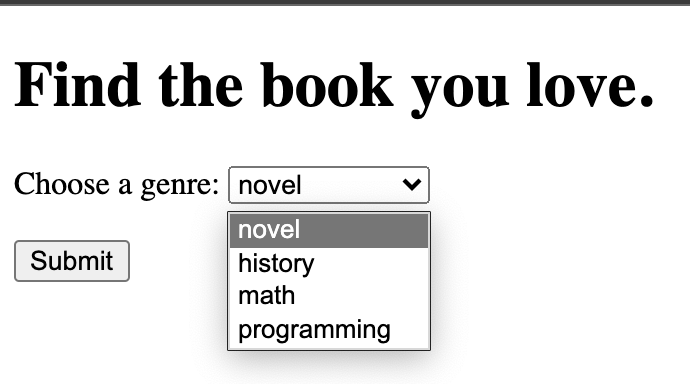
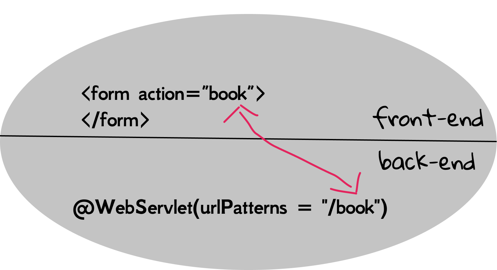
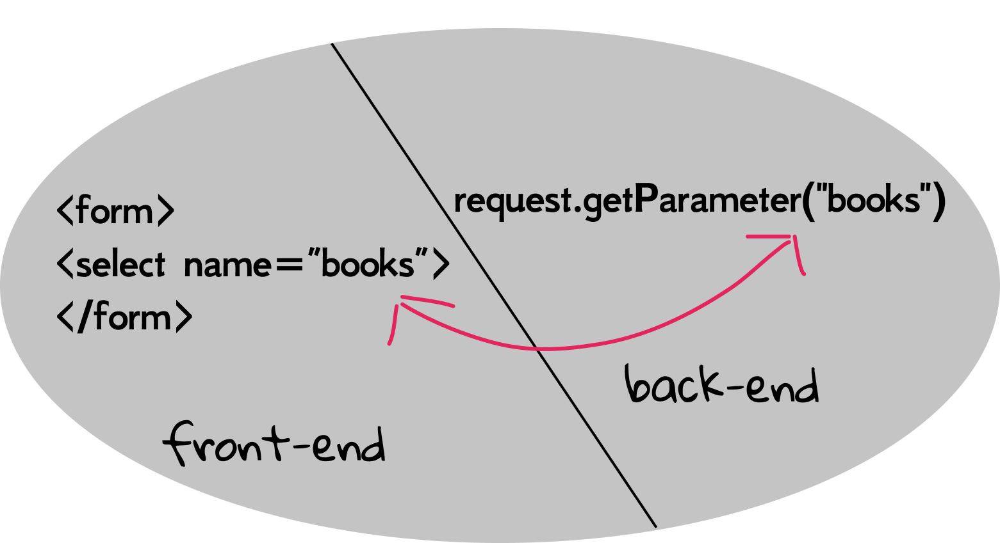
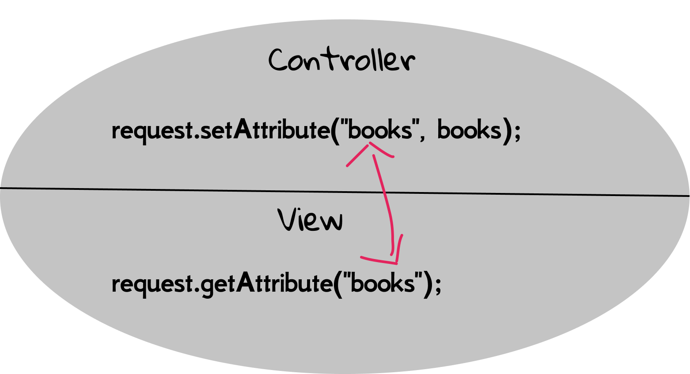

2.4 Hands On MVC (1)
In the last section, we have studied the basic principles about MVC, and it is time to get your hands dirty to write a practical web application with MVC design. Particularly, you will learn a large number of modern web developing knowledge. Although this app is very small, the main principle remains the same even if you are going to build something huge. By the way, today's small app is tomorrow's dot-com success. Keep going!
We will use the book-selling website as our running example. Firstly, let's summarize the requirements. User can select the genre of books in the web page, and send an HTTP request to the server. Then the destination servlet would retrieve book recommendation from a model, and then send back the result to a JSP for display. All code in this section can be found in mini-mvc.
Front-end design
Although it is possible to put HTML elements into both JSP and HTML, a plain HTML is always preferable if no dynamic content is required. So let's get started with the front-end design with a plain HTML. First of all, let's try to figure out why index.jsp is launched automatically when you start the web app. This is because the default start page of most web servers and containers is index, including index.html, index.htm, and index.jsp.
[!NOTE] By default, Tomcat would locate and display the index page (e.g.,
index.html,index.jsp). If it is not found, there will be a 404 error. Suppose your entry page is another file, sayform.html, and you can still visit it by its URL explicitly. For example, http://localhost:8080/myapp/form.html.
In order to build a website from scratch, we delete the auto-generated HelloServlet.java and index.jsp, and create an empty index.html under webapp folder as the entry point of our web app.
The UI interface of our book-selling website only contains:
- A descriptive title (clearly it is
<h1>element) - A select box
- A button

Let's recall the expected behavior in this web page: a user selects a genre of books and sends an HTTP request by clicking the submit button.
[!NOTE] In HTML, we shall use the
<form>tag to send an HTTP request.
Those elements which are capable of shipping with input data can be used inside <form>, and they are usually called form element. <select> is the one that is able to create a drop-down list with several options. The full HTML code is as what follows:
<form>
<label for="books">Choose a genre:</label>
<select name="books" id="books">
<option value="novel">novel</option>
<option value="history">history</option>
<option value="math">math</option>
<option value="programming">programming</option>
</select>
<br><br>
<input type="submit" value="Submit">
</form>
[!TIP] If you have some troubles in understanding various HTML tags, please visit HTML Tutorial.
The <label> here is optional, and is used to represent a caption for an item in a user interface. Otherwise, users may have no idea of what <select> is going to do. The attribute for is to specify the id of the form element the label should be bound to.
Let's take a closer look at <select>. Its id attribute serves a unique identifier, as all HTML tags do, and id here also used to bind to the <label> element as we have discussed. What is name attribute used for? We will leave this problem to the latter.
We can notice that four <option> elements are nested inside <select>, and this is used to define an option in a select list. The <option> tag can be used without any attributes, but you usually need the value attribute, which indicates what is sent to the server on form submission. Some beginners might find it difficult to distinguish between the value and the element content. In fact, they have nothing to do with each other, and Fig 2.18 illustrates the differences.
You can either open index.html via a web browser directly in the file manager (such as Finder on MacOS, Explorer on Windows, Nautilus on Ubuntu), or open it via built-in preview in IntelliJ IDEA. Now we have finished the front-end design, but an important question emerges: how can HTML, or more specific, <form> send data to the server? Not surprisingly, it is specified by a <form> attribute.
<form action="some_servlet">
...
</form>
As the code shows, the value of action is the destination servlet's URL name. In other words, a servlet whose URL name is some_servlet is going to handle this HTTP request. By the way, HTTP also defines a set of request methods to indicate the desired action to be performed for a given resource, and the default method in <form> is GET. You can also specify the HTTP method using method attribute explicitly.
<input> can be in various forms given different type attribute. For example, submit would render it as a button, and it shall send an HTTP request (i.e., submit a form) after clicking. It can also be replaced with a <button> tag:
<button type="submit">Submit</button>
And two ways are equivalent. You can try out different input types if you are interested, such as:
<input type="text"><input type="color"><input type="date"><input type="password">- ...
Back-end design
Let's create a servlet BookServlet.java, with the URL name /book, to receive the data from the front-end. First of all, make sure the action attribute of <form> is set to book.

[!TIP] You will encounter some new APIs. Don't panic, and be brave to look up them using the skills in Section 2.2.
Based on the introduction to HTTP in Section 1.4, the data is wrapped in the HTTP request, and they are usually called parameters*. Then how to extract parameters from the request? Luckily, HttpServletRequest has an API called getParameter().
String getParameter(String name) Returns the value of a request parameter as a String, or null if the parameter does not exist.
Remember the name attribute of <select>? It is actually the name of a parameter.

And the following is our first version of doGet():
PrintWriter out = response.getWriter();
response.setContentType("text/html");
String book = request.getParameter("books");
out.println("Book Selection:");
out.println(book);
(Note that we don't output HTML tags, but output the content directly. It still works because the web browser is smart enough to detect out intention.)
Stop here and try to start this web app, and observe what you see when you click the button in index.html. Note that such iterative test-driven approach is very common in software developing. Write some code and then test if it works well. If so, keep going and write more code. Otherwise, go back to fix the bug.
Now it is time to write code for models. In this web app, the Model is to make books recommendations, and it is plain old Java code. We firstly create a model package, and then create a Recommendation class:
public class Recommendation {
public List<String> getBooks(String genre) {
List<String> result = new ArrayList<>();
if (genre.equals("novel")) {
result.add("The Great Gatsby");
result.add("Gone with the Wind");
} else if (genre.equals("history")) {
result.add("1587, a Year of No Significance");
} else if (genre.equals("math")) {
result.add("The Linear Algebra Survival Guide");
} else if (genre.equals("programming")) {
result.add("Head First Java Web");
result.add("Effective Java");
}
return result;
}
}
Then BookServlet, as the Controller, obtains the model from Recommendation. Here is our second version of doGet() (repeating code is omitted).
List<String> books = new Recommendation().getBooks(book);
for (String b : books) {
out.println(b);
}
(Again, keep the design-code-test cycle in mind.)
Lastly, we need a View for this web app, and take the presentation role out of BookServlet. So, let's create a result.jsp. In the last section, we have learned how to forward a request to JSP using RequestDispatcher, and there is still unsolved issue: how to send data back to JSP? Understanding such data share mechanism is an essential part in web developing, and we will cover in detail in the later of the book. Now we only introduce one of the methods.
Recall that when forwarding, both the servlet and JSP share the same request object, so any changes to the request by the servlet shall also be observed by the JSP. Intuitively, the main idea is to request.setXXX() in BookServlet.java, and then request.getXXX() in result.jsp[1]. And this is exactly how the servlet's API is designed. The following is our third (and final) version of this web application.
String book = request.getParameter("books");
List<String> books = new Recommendation().getBooks(book);
request.setAttribute("books", books);
RequestDispatcher dispatcher = request.getRequestDispatcher("result.jsp");
dispatcher.forward(request, response);
As we can see, the setAttribute() method does what we really want! Its second parameter is the object we store, and its first parameter is the name of the object. Note that the exact name is not important, as long as we can keep it consistent when retrieving this object.
void setAttribute(String name, Object o) Stores an attribute in this request.
And then we can use getAttribute() in result.jsp expectedly. Note that this method would return an Object, so we shall convert it back to List<String> first.
<%
List<String> books = (List<String>) request.getAttribute("books");
for (String b : books) {
%>
<%= b %>
<% } %>
Standard Java code in JSP is put inside <% %> tags, and this is known as scriptlet code.
The <%= %> is JSP expression tag, which was introduced in Section 1.5.

Some beginners may ask, where does the variable request come from? Good question. It is one of implicit objects in JSP, and we will introduce more implicit objects in the latter of this book. For example, request is an instance of HttpServletRequest, out is another implicit object (an instance of PrintWriter) for the ease of output. So the code above can be rewritten as:
<%
List<String> books = (List<String>) request.getAttribute("books");
for (String b : books) {
out.println(b);
}
%>
Congratulations! You have built your first mini MVC web application! Although there are still some pitfalls in its design and code, it can be a good prototype for any complex projects based on serlvets.
A caution before moving on
Understanding this mini MVC project is very important for later more advanced topics, So please be patient, slow down and learn it by doing again and again. In particular, some beginners may be confused about the repeated names, such as "books" and "book", because those names have different meanings in different contexts. If you have the similar doubt, please refer to Fig 2.17-2.21.
In addition, although it is possible to sent HTTP requests to JSPs directly, please avoid do this if possible, because it would break the MVC design.
[1] Such code paradigm is called setter/getter, and it is widely used in many object-oriented programmings, such as Java, C#.